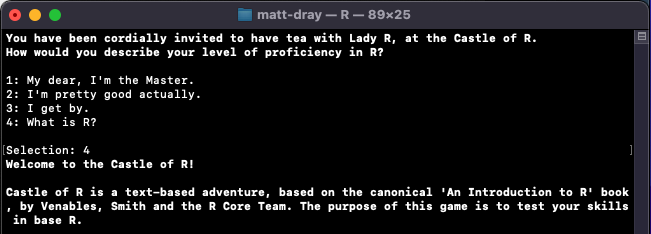
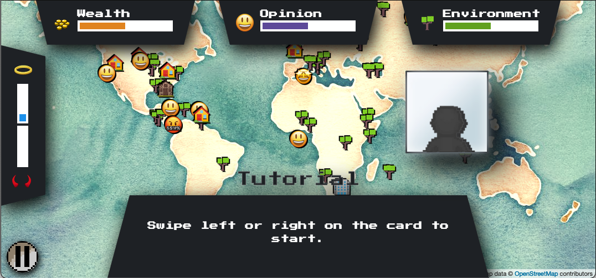
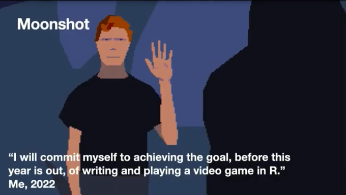

R is ‘a free software environment for statistical computing and graphics’. Ahahaha, no it’s not, it’s a game engine. I’ve created a ‘splendid’ list of games you can play—written in R—to prove it. Help expand it.
R is not a general, multi-purpose programming language. It was written to do statistical analysis and make charts. You are literally not allowed to do anything else with it. You should use <LANGUAGE> instead, which is much more suited to your specific use case. R is a joke language for nerds.
You should not read beyond this point if you think, quite rightly, that mirth and frivolity are unsuited to an R session.
Stats only?
Unity. Unreal. GameMaker. Godot. All of these videogame engines are now obsolete.
It is R—humble R!—that represents the future of gaming.
I think there’s three kinds of ‘platform’ for games written in R:
For the console
In Shiny
Ported
Games played in the console are pretty straightforward and probably most common. You can run some code, or a function from a package, to launch some code in the R console that you can interact with. A simple option for this might involve use of readline() to receive user input, for example, like Giora Simchoni’s excellent text-based puzzler, Castle of R.

Giora’s Castle of R running in the terminal.
Shiny can give you a little more flexibility when it comes to graphics and user input, at the expense of needing to host the app and maybe some extra JavaScript skills. A great example of this is Pedro Silva’s winning entry (app, source) to the Posit Shiny contest in 2020.

A still from Pedro’s Shiny Decisions app.
The third category is a little more boundary-pushing. Imagine if R was powerful enough to let you port existing games. Well, surprise, ya boi Mike Cheng (aka coolbutuseless) has pushed hard on expanding the capabilities of R to run fast enough and with realtime user input,3 porting the classic Another World (1991) to R, which was showcased at 2022’s Posit conference (source, video, blog).

A still from Mike’s rstudio::conf(2022) presentation, featuring Another World.
Of course, within these ‘platforms’ are genres like word games, arcade games, puzzle games, etc. Will you be the first to create an MMORPG (a massively-multiplayer online R-powered game)?
I am an indie game dev now
I’ve always been interested in how videogames are coded,4 wishing that I could do the same myself. Of course I could simply learn ‘real’ programming languages.
Except that’s blasphemy. Of course I’d rather break my own mind and spirit in an attempt to make R achieve 0.1% of what might be possible in P*thon.
Case in point, I’ve made a few R packages containing some little toys (in order of gooddest to baddest):
{r.oguelike} (source, blogs) for a procedural-dungeon explorer with enemy pathfinding and inventory
{tamRgo} (source, blog) for a cyber pet in your R console that persists between sessions
{safar6} (source, blog) for a text-based re-make of the Safari Zone from the first generation of Pokémon games
{ActionSquirrel} (source, blog) for a tile-based, turn-based minigame in the R console
Hint when playing {tamRgo}: do not forget about your pet for 138 days. RIP Kevin XVIII.
I’ve got something in the pipeline that involves extremely rudimentary physics in the R console. Wow! For release in 2023 (because game launches never go wrong).
Ready Player 2
The splendid list must be missing a bunch of games. Please leave an issue or pull request in the splendid-r-games repo to add more examples.
Next stop: letting people run R games in the browser without an installed copy of R. This is already possible with a service like Binder, which can spin up an instance of RStudio with packages pre-installed I did this for {r.oguelike}).
I like YouTube devlogs by folks like Seb Lague, ThinMatrix, SquidGod, Jonas, TanTan and others. R can never achieve what they’re up to, but I like listening through the logic of what they’re doing.↩︎